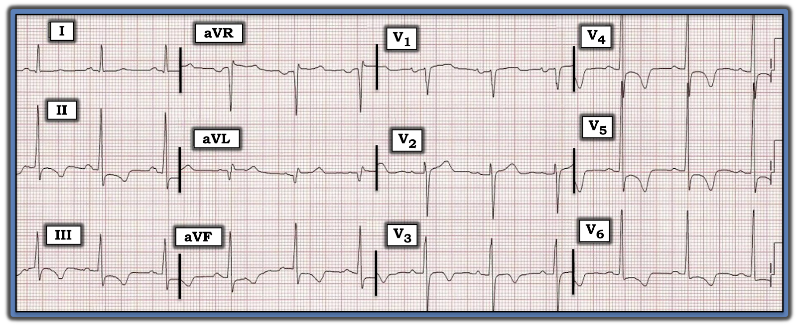
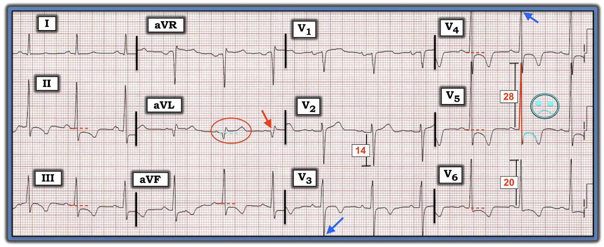

ECG Blog #245 — Suy tim. Một biến cố cấp?
Điện tâm đồ ở Hình-1 được ghi từ một người đàn ông 65 tuổi bị tăng huyết áp lâu năm. Ông đến ED (Emergency Department — khoa cấp cứu) vì một đợt nặng lên của HF (Heart Failure — suy tim). Không đau ngực. Không có bản ghi nào trước đó.
CÂU HỎI:
- Có bằng chứng MI (Myocardial Infarction — nhồi máu cơ tim) ở Hình-1 không?
- NẾU có — Bạn lo ngại đây là MI "mới" hay "cũ"?


=======================================
LƯU Ý: Đến đây, một số bạn đọc có thể muốn nghe ECG Audio PEARL dài 9:10 phút trước khi đọc Suy nghĩ của tôi về điện tâm đồ ở Hình-1. Bạn có thể tham khảo Suy nghĩ của tôi về bản ghi này bất cứ lúc nào (nằm ở bên dưới ECG MP-59).
=======================================

ECG Media PEARL #59 (9:10 phút Audio) hôm nay — Ôn lại chẩn đoán LVH (phì đại thất trái — và ý nghĩa lâm sàng của nó trong cả các bệnh tim mạn tính lẫn cấp tính) trên điện tâm đồ.
- Xin xem Phần bổ sung bên dưới với Hình-3 và -4, minh họa và tóm tắt các tiêu chuẩn điện thế và các tiêu chuẩn khác để chẩn đoán LVH và tăng gánh ("strain") thất trái trên điện tâm đồ.
- Để biết thêm chi tiết về chẩn đoán LVH trên điện tâm đồ — Xin xem ECG Blog #73.
Suy nghĩ tuần tự CỦA TÔI về điện tâm đồ ở Hình-1:
Như mọi khi — tôi ưu tiên dùng Cách tiếp cận hệ thống (mà tôi đã ôn lại trong ECG Blog #205):
- Tần số & Nhịp: Sóng P dương ở chuyển đạo II — nên nhịp ở Hình-1 là nhịp xoang. Tần số đều, 70 lần/phút.
- Các khoảng (PR/QRS/QTc): Mọi khoảng đều bình thường (tức là khoảng PR không quá 1 ô lớn — QRS không quá nửa ô lớn — và QTc rõ ràng ngắn hơn một nửa khoảng R-R).
- Trục: Trục mặt phẳng trán bình thường, khoảng +70 độ (tức là chuyển đạo aVF dương hơn chuyển đạo I — và QRS hơi âm ở chuyển đạo aVL).
Lớn các buồng tim: "Hệ thống" của tôi là lần lượt tự hỏi liệu có đủ tiêu chuẩn điện tâm đồ về lớn buồng cho từng buồng trong 4 buồng tim hay không (như đã ôn trong ECG Blog #75 về RAA/LAA — và trong ECG Blog #234 về RVH):
- Có RAA (bất thường nhĩ phải — Right Atrial Abnormality)? — Không, vì sóng P ở các chuyển đạo thành dưới không cao và nhọn bất thường.
- Có LAA (bất thường nhĩ trái — Left Atrial Abnormality)? — Có lẽ có, vì thành phần âm của sóng P ở chuyển đạo V1 trông có vẻ rộng ra (Xem ĐIỂM THEN CHỐT #1 bên dưới).
- Có RVH (phì đại thất phải — Right Ventricular Hypertrophy)? — Không (Không có trục lệch phải — không có RAA — không có sóng R cao ở chuyển đạo V1 — không có tăng gánh ("strain") thất phải — và không có sóng S tồn tại kéo dài ở các chuyển đạo ngực bên).
- Có LVH (phì đại thất trái — Left Ventricular Hypertrophy)? — Có! (Sẽ bàn chi tiết bên dưới! )
ĐIỂM THEN CHỐT (PEARL) #1: Như đã nhấn mạnh trong ECG Blog #75 — điện tâm đồ không nhạy cũng không đặc hiệu để đánh giá lớn nhĩ. Hơn nữa — các chuyên gia đọc điện tâm đồ thường không thống nhất với nhau về việc có lớn nhĩ trên điện tâm đồ hay không. Vì vậy — tôi thường đọc dè dặt dấu hiệu này trừ khi thỏa rõ ràng các tiêu chuẩn. Điều cốt lõi: NẾU bạn thực sự cần biết kích thước nhĩ — thì siêu âm tim chính xác hơn nhiều. Dù vậy — vẫn có những dấu hiệu tinh tế gợi ý LAA có hiện diện ở Hình-1:
- Bệnh sử lâm sàng của ca hôm nay quả thật gợi ý khả năng tiền nghiệm cao có LAA — vì bệnh nhân bị tăng huyết áp lâu năm, và nhập viện vì đợt nặng lên của suy tim (cả hai tình trạng đều dễ dẫn đến LAA).
- Như ta sẽ thấy ngay sau đây, có bằng chứng điện tâm đồ chắc chắn về LVH (thường gặp khi có LAA).
- Tiêu chuẩn điện tâm đồ đáng tin cậy nhất cho LAA là có thành phần âm của sóng P ở chuyển đạo V1 sâu hơn và/hoặc rộng hơn bình thường. Lý do sinh lý của dấu hiệu này — là nó phản ánh hoạt động điện của nhĩ tăng lên, đi ra xa chuyển đạo V1 nằm bên phải (hay hướng về phía nhĩ trái). Mặc dù sóng P ở chuyển đạo V1 có biên độ thấp ở Hình-1 — rõ ràng có vẻ thời gian của thành phần âm cuối sóng P này bị kéo dài.
- LƯU Ý: Đúng là một nguyên nhân thường gặp của thành phần âm của sóng P ở chuyển đạo V1 là đặt sai điện cực V1 và V2 quá cao trên thành ngực — nhưng tôi không nghĩ đặt sai vị trí điện cực là nguyên nhân gây sóng P âm ở Hình-1 vì: i) Hình dạng QRS ở các chuyển đạo aVR, V1 và V2 hoàn toàn không giống nhau (trong khi thường giống nhau khi V1, V2 bị đặt quá cao trên ngực); và, ii) Hình dạng sóng P ở các chuyển đạo aVR, V1 và V2 rất khác nhau. Dù đặt chuyển đạo V1 quá cao có thể làm sóng P âm ở chuyển đạo này — điều đó không được kỳ vọng sẽ làm kéo dài thời gian của sóng P âm. Vì vậy — dấu hiệu thành phần âm của sóng P rộng ra ở chuyển đạo V1, không thấy ở chuyển đạo V2, và không gợi ý điện cực V1 bị đặt quá cao, càng ủng hộ LAA là nguyên nhân của dấu hiệu này. (Để ôn lại cách nhận ra nhanh đặt sai vị trí điện cực V1,V2 — Xin xem Bình luận của tôi ở cuối trang trong bài ngày 4 tháng 11 năm 2018 trên ECG Blog của Dr. Smith).
ĐIỂM THEN CHỐT (PEARL) #2: Có bằng chứng điện tâm đồ chắc chắn về LVH ở Hình-1.
- Cũng như với LAA — bệnh sử lâm sàng của ca hôm nay cũng gợi ý khả năng tiền nghiệm cao có LVH ở bệnh nhân tăng huyết áp lâu năm và suy tim này, ngay cả trước khi bạn nhìn vào điện tâm đồ.
- Nhiều tiêu chuẩn điện thế cho LVH được thỏa dễ dàng ở người đàn ông 65 tuổi này (Xem Hình-3 trong Phần bổ sung bên dưới). Gồm: i) S sâu nhất ở V1,V2 + R cao nhất ở V5,V6 ≥35 mm (Hình-2); ii) Sóng R cao ≥25 mm ở chuyển đạo V5; và, iii) Sóng R cao ≥18 mm ở chuyển đạo V6.
- Như tôi sẽ bàn ngay sau đây (bên dưới) — có thay đổi ST-T phù hợp với thay đổi tái cực của tăng gánh ("strain") thất trái.
ĐIỂM THEN CHỐT (PEARL) #3: BẠN có để ý rằng biên độ sóng S bị cắt cụt ở chuyển đạo V3? Biên độ sóng R ở chuyển đạo V4 cũng bị cắt cụt.
- Chúng ta không biết sóng S ở chuyển đạo V3 hay sóng R ở chuyển đạo V4 sẽ sâu/cao đến đâu NẾU biên độ QRS ở các chuyển đạo này không bị cắt cụt.
- Rất có khả năng sẽ thỏa thêm các tiêu chuẩn điện thế khác cho LVH (trong Hình-3) NẾU điện tâm đồ này được ghi ở mức nửa chuẩn (half-standardization) để ta thu được trọn kích thước của phức bộ QRS ở các chuyển đạo này.
- Điểm MẤU CHỐT: Dù tiêu chuẩn điện tâm đồ cho LVH được xem là "thỏa" khi đạt bất kỳ một tiêu chuẩn điện thế nào — càng thỏa nhiều tiêu chuẩn điện thế (và vượt ngưỡng điện thế càng nhiều), thì xác suất lớn buồng thật sự càng cao (và mức độ nặng nhiều khả năng càng lớn).


Quay lại điện tâm đồ của ca hôm nay để hoàn tất Cách tiếp cận hệ thống — Chúng ta kết thúc phần đánh giá bằng việc xem xét Thay đổi Q-R-S-T:
- Q Sóng Q — Có một sóng Q sâu và rộng ở chuyển đạo aVL (mũi tên ĐỎ ở Hình-2). Cũng có một sóng q rất nhỏ ở chuyển đạo I.
- R Tăng tiến sóng R — bình thường. Đã thấy rõ một sóng dương khởi đầu (sóng r) ở chuyển đạo V2 — với vùng chuyển tiếp (nơi sóng R ở các chuyển đạo ngực trở nên cao hơn độ sâu của sóng S) xảy ra bình thường giữa chuyển đạo V3 và V4.
Về Thay đổi ST-T:
- Có ST chênh xuống tại điểm J ở nhiều chuyển đạo — thể hiện qua đoạn ST nằm dưới các đường chấm ĐỎ ở các chuyển đạo II, III, aVF; và ở V4, V5, V6.
- Hình dạng của các đoạn ST chênh xuống này là bất thường, ở chỗ nó có dạng vòm (tức là cấu hình "mặt mếu") — như được minh họa theo sơ đồ bằng các hình vẽ màu XANH nhạt ở chuyển đạo V5 của Hình-2.
- Có sóng T đảo ngược sâu, đối xứng ở từng chuyển đạo có ST chênh xuống này, và cả ở chuyển đạo V3.
- Ngoài sóng Q ở chuyển đạo aVL đã nêu ở trên — còn có ST chênh lên nhẹ nhưng có thật ở chuyển đạo này (thể hiện qua đoạn ST ở aVL nằm trên đường chấm XANH ở chuyển đạo này).
Điện tâm đồ hôm nay: Tổng hợp lại
Khi không có điện tâm đồ cũ để so sánh — việc diễn giải điện tâm đồ hôm nay là một thử thách. SUY NGHĨ CỦA TÔI = Nhịp xoang với LVH rõ và LAA có lẽ có. Sóng Q ở chuyển đạo aVL có thể chỉ ra nhồi máu cũ không rõ thời điểm. ST chênh xuống lan tỏa tại điểm J, với đoạn ST dạng vòm và sóng T đảo ngược sâu, đối xứng ở nhiều chuyển đạo phù hợp với tăng gánh ("strain") thất trái và/hoặc thiếu máu cục bộ có thể là cấp tính. Cần đối chiếu lâm sàng.
- Thực tế là — không thể diễn giải dứt khoát điện tâm đồ hôm nay chỉ từ một bản ghi duy nhất này. Sẽ cần thêm thông tin (tức là tìm điện tâm đồ cũ của bệnh nhân để so sánh — điện tâm đồ nhiều lần tại ED — troponin nhiều lần — cân nhắc siêu âm tim cấp để tìm rối loạn vận động thành khu trú, v.v.) để đánh giá chính xác bệnh cảnh lâm sàng.
- ĐIỂM THEN CHỐT #4: Lý do tôi viết tăng gánh ("strain") thất trái và/hoặc thiếu máu cục bộ ở trên trong phần diễn giải — là vì đôi khi, dấu hiệu hoặc tăng gánh thất trái hoặc thay đổi ST-T trông như thiếu máu cục bộ có thể che lấp cái còn lại! Khi điều này xảy ra — có thể khó (nếu không nói là không thể) phân biệt giữa LVH rõ (tức là do tăng huyết áp lâu năm và/hoặc bệnh cơ tim) — với LVH ở bệnh nhân đồng thời có thiếu máu cục bộ cấp/nhồi máu đang diễn tiến.
- "Tin tốt" — là có vẻ không có OMI cấp ( = nhồi máu cơ tim do tắc — Occlusion-based Myocardial Infarction) đang xảy ra. Chuyển đạo duy nhất có ST chênh lên là aVL — nhưng một sóng Q sâu và rộng đã hình thành, và hình dạng của đoạn ST chênh lên ở chuyển đạo aVL (trong vòng bầu dục ĐỎ ở Hình-2) không gợi ý OMI cấp. Thêm một điểm ủng hộ không phải OMI cấp — là không có đau ngực.
- Điểm MẤU CHỐT: Từ ý ở trên — có vẻ như lúc này không cần kích hoạt phòng thông tim (cath lab)! Thay vào đó — xử trí tối ưu là điều trị đợt nặng lên cấp của suy tim ở bệnh nhân này — kèm theo dõi sát, trong khi thu thập thêm thông tin. Ngay cả khi troponin hóa ra dương tính — khi không có đau ngực và không có ST chênh lên cấp, thì cũng không cần can thiệp cấp.
==================================
Các bài ECG Blog liên quan đến ca hôm nay:
- ECG Blog #205 — Ôn lại Cách tiếp cận hệ thống của tôi khi đọc điện tâm đồ 12 chuyển đạo.
- ECG Blog #73 — Ôn lại "quan điểm của tôi" về chẩn đoán LVH trên điện tâm đồ.
- ECG Blog #92 — Trình bày một góc nhìn khác về chẩn đoán LVH trên điện tâm đồ.
- ECG Blog #75 — Ôn lại "quan điểm của tôi" về chẩn đoán LAA & RAA trên điện tâm đồ.
- ECG Blog #234 — Ôn lại "quan điểm của tôi" về chẩn đoán RVH trên điện tâm đồ.
- Bài ngày 4 tháng 11 năm 2018 trên ECG Blog của Dr. Smith — Bình luận của tôi (ở cuối trang) ôn lại 3 manh mối điện tâm đồ giúp nhận ra nhanh đặt sai vị trí điện cực V1,V2 do nhầm lẫn.
- Bài ngày 31 tháng 3 năm 2019 trên ECG Blog của Dr. Smith — Bình luận của tôi (ở cuối trang) minh họa tác động có thể gây hiểu lầm của điện tâm đồ trước viện ở bệnh nhân LVH, do cắt cụt điện thế sóng S ở các chuyển đạo trước.
- Bài ngày 29 tháng 3 năm 2019 trên ECG Blog của Dr. Smith — Bình luận của tôi về Bản ghi A (ở cuối trang) minh họa việc LVH là một hình ảnh giả thường gặp của thiếu máu cục bộ cấp.
- Bài ngày 27 tháng 12 năm 2018 trên ECG Blog của Dr. Smith — Bình luận của tôi (ở cuối trang) minh họa một ca có ST chênh lên ở thành trước do LVH có thể gợi ý sai là nhồi máu thành trước cấp.
==================================
PHẦN BỔ SUNG (18/8/2021): Tôi đã thêm bên dưới, ở Hình-3 và Hình-4, tài liệu bổ sung giúp chẩn đoán LVH và tăng gánh ("strain") thất trái trên điện tâm đồ.